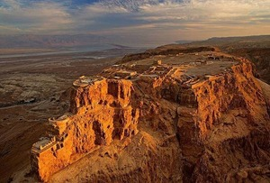
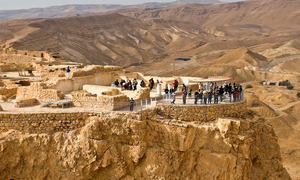
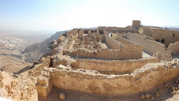
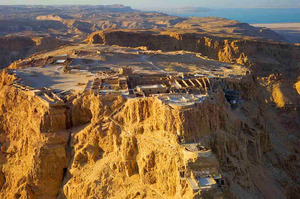

Всемирное наследие ЮНЕСКО
Масада – это естественная скалистая крепость в Иудейской пустыне, величественно красивая и доминирующая над низиной Мертвого моря. Это символ древнего Израильского царства, его жестокого уничтожения и последнего сопротивления, которое еврейские патриоты оказали древнеримской армии в 73 г. н.э. Она была построена как дворцовый комплекс в классическом стиле ранней Римской империи Иродом Великим, царем Иудеи (правил в 37–4 гг. до н.э.). Лагерь, укрепления и рампа для штурма, расположенные в окружении Масады, признаются наиболее хорошо сохранившимися следами древнеримских осадных сооружений.
|  |  |  |  |
Первые сведения о строительстве датируются 37-31 годами до н.э. Тогда, во времена правления Хасмонейской династии, здесь была построена крепость. Чуть позже, примерно в 25 году до н.э. правитель Ирод I, обнаружив на горе сооружения и постройки, пригодные для хранения провизии, вооружения и питьевой воды, решил достроить, укрепить и оборудовать здесь полноценную крепость.
Это решение вполне обосновано, так как царь Ирод I был, мягко говоря, не совсем любим своими подданными, и предпочитал жить в местах недоступных и защищенных. Крепость Масада как нельзя лучше для этого подходила. Недоступная для стрел и метательных орудий высота, отвесные скалы по периметру (от 100 до 300 метров) делали Масаду неприступной цитаделью.
Проникнуть в крепость можно было только со стороны Мертвого моря. Что бы попасть на вершину, нужно было преодолеть узкую извилистую дорогу, прозванной «змеиной тропой». Позже появился еще один путь в крепость с западной стороны. Однако об этом вы узнаете чуть ниже.